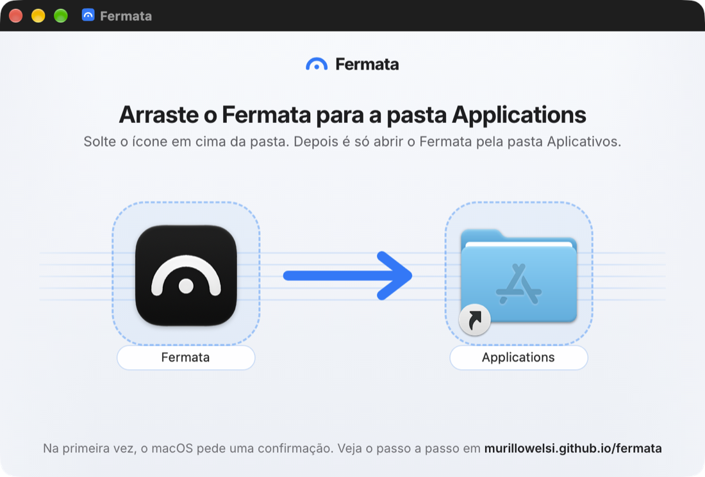
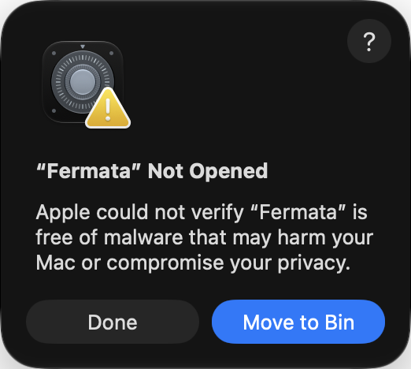
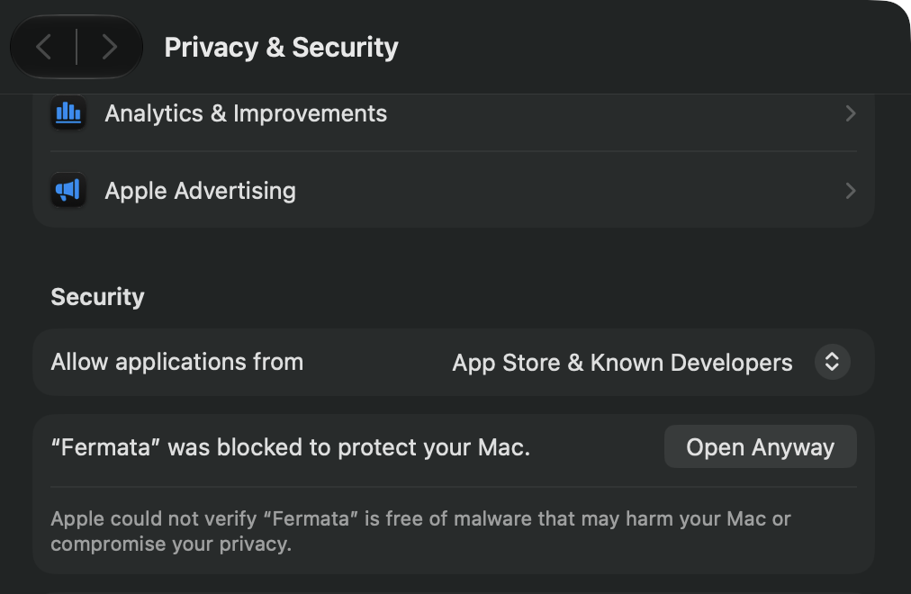
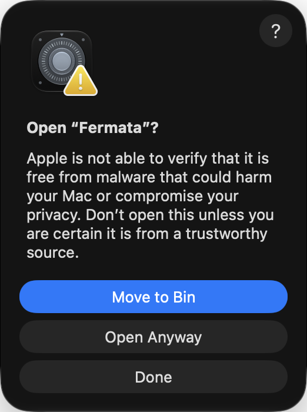

Instalar no Mac
O Fermata é gratuito e não tem a assinatura paga da Apple. Por isso, na primeira vez, o macOS pede que você confirme. São 4 passos, uma vez só.
Baixar para Mac.dmg · macOS 10.13 ou mais novo · Intel e Apple SiliconFermata-Installer.dmg. Não começou? Baixar de novo.Atenção nos dois avisos do macOS: o botão azul, Move to Bin, apaga o app. Clique em Done no primeiro aviso e em Open Anyway no segundo.
Arraste para Applications
Abra o
Fermata-Installer.dmgnos Downloads. Na janela, arraste o Fermata (à esquerda) até a pasta Applications (à direita).
(abre o print ampliado)Abra uma vez e clique em Done
Abra o Fermata na pasta Aplicativos. Aparece o aviso “Fermata” Not Opened.
✕ Não clique no azul, Move to Bin: ele apaga o app.

(abre o print ampliado)Libere em Privacy & Security
Menu Apple ▸ Ajustes do Sistema ▸ Privacidade e Segurança. Role até Segurança e clique em Open Anyway. O botão fica ali por cerca de uma hora depois do passo 2.

(abre o print ampliado)Confirme com Open Anyway
Na janela Open “Fermata”?, clique no botão do meio e digite a senha do Mac (ou use o Touch ID). Pronto: daqui em diante, dois cliques.
✕ De novo, o azul é Move to Bin.

(abre o print ampliado)


macOS 14 (Sonoma) ou mais antigo: clique no Fermata com o botão direito (ou Control + clique) ▸ Abrir ▸ Abrir. Os prints são de um Mac em inglês: Done = Concluído, Move to Bin = Mover para o Lixo, Open Anyway = Abrir Mesmo Assim.
Por que o macOS avisa? É seguro?
A Apple só deixa de avisar sobre apps que passaram pela notarização dela, que exige uma conta paga de desenvolvedor. O Fermata é gratuito e ainda não tem essa conta. O código-fonte é aberto e pode ser conferido no GitHub. Baixe sempre por esta página ou pela página de versões do projeto.
Como atualizar para uma versão nova
Baixe o instalador novo e arraste o Fermata para Applications de novo, escolhendo Substituir. Talvez o macOS peça a confirmação dos passos 2 a 4 mais uma vez.
Liberar pelo Terminal (opção avançada)
Depois do passo 1, abra o Terminal e rode o comando abaixo. Ele tira a marca de “baixado da internet” só do Fermata:
xattr -dr com.apple.quarantine /Applications/Fermata.app